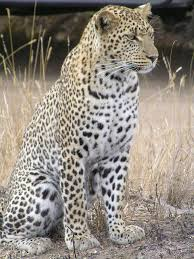
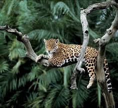

Tigers

For more information on Tigers , please click on the above image.
Tigers are the largest cat species in the world reaching up to 3.3 meters in length and weighing up to 670 pounds!
Tigers are easily recognizable with their dark vertical stripes and reddish/orange fur.
The Bengal tiger is the most common tiger.
Tigers live between 20-26 years in the wild.
Cool_Video_on_TigersLions

For more information on Lions , please click on the above image.
Lions are the only cats that live in groups.
A group, or pride, can be up to 30 lions, depending on how much food and water is available.
Female lions are the main hunters.
A lion's roar can be heard up to eight kilometres away.
Cool_Video_on_LionsLeopards
For more information on Leopards , please click on the above image.
The leopard is the most elusive and secretive of the large felids.
Leopards are predominantly solitary animals that have large territories.
Like cats kept as companions, leopards will growl when angry and purr when content.
Leopards tend to have two or three cubs per cycle of birth.
Cool_Video_on_LeopardsCheetahs
For more information on Cheetahs , please click on the above image.
Although now found in Africa, the cheetah is believed to have originated in the Americas.
The cheetah is the world’s fastest land animal. They can run as fast as a car on the interstate—up to 70 mph.
Those black tear lines on either side of a cheetah’s nose function like a football player’s black face paint, keeping the sun out of the big cat’s eyes while they hunt.
A cheetah’s claws don’t retract when they run. Instead, they act like cleats to help the cheetah reach its top speeds.
Cool_Video_on_CheetahsJaguars
For more information on Jaguars , please click on the above image.
The jaguar is a big cat in the Panthera genus, the jaguar's scientific name is Panthera onca.
The jaguar is the 3rd largest of the big cats after the tiger and the lion and it is the largest of all the big cats in the Americas.
Jaguar's are only found in the Americas. Their range extends from Arizona in South-west United States, Mexico, through Central America, into most Amazon River Basin countries in South America and as far south as northern Argentina.
The jaguar's preferred habitat is dense rainforest, but they are also found across other forested areas and open plains.
Cool_Video_on_Jaguars